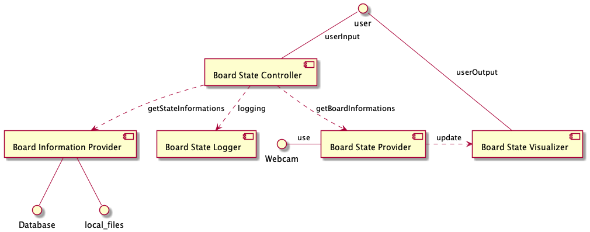

Welcome to LED / Board Status Detection’s documentation!¶
The goal of this project is to have an application for tracking status LEDs on controller boards over webcam.
Requirements¶
The whole project is written in python 3.9 with a bundle of libraries, which are listed in requirements.txt. To install those with pip just type:
pip install -r requirements.txt
If you prefer conda you can easily run the setup.sh file to install all requirements using either conda or pip. The code for that was copied from Syncing Conda Environments with requirements.txt (05.10.2021) Lee Hanchung
Creating a virtual environment¶
We highly recommend to use a virtual environment such as pyenv or conda.
The Components¶
Our main architecture is based on a MVC pattern.

architecture which shows the abstract communication between the different entities.¶
The user can connect to the Board State Controller (BSC) either inside of labgrid or outside an application. By naming the local path or an global url the BSC uses the Board-Information-Provider to load a predefined Board specification which contains an reference image as well as LED locations and state-events. Those information are send to the Board State Provider (BSP) which opens a webcam stream and first locate the region of interest of all LEDs. It also classifies the state of the led signals. Those events can be displayed with the Board State Visualizer (BSV). It can be displayed either as command line inside labgrid or as annotated video stream.
Glossary¶
Labgrid: an embedded systems control library for development, testing, and installation. See Labrid on GitHub.
Board State Distriubtion System (BoSS): a non-invasive DUT board state detection and reporting system. For a concept see: BoSS on GitHub.
OpenCV: A computer vision library. See OpenCV in Python
Board State Visualizer (BSV): The BSV is the tool the user will mostly use to interact with the BoSS as it actually presents the gathered and distributed information
Board State Coordinator (BSC): The BSC is the entity that provides service discovery as it implements a dictionary of service providers to be accessed by the service consumers
Board State Provider (BSP): The BSP dynamically extracts board state information from the board, e.g. via computer vision algorithms that analyse camera images taken from the board of interest
Board Information Provider (BIP): The BIP implements a service providing general information about boards.
Board Description Generator (BDG): The Board Description Generator, in short BDG is a tool for creating board descriptions,
Board State Logger (BSL): The BSL is a board state consumer dedicated to providing logging facilities.